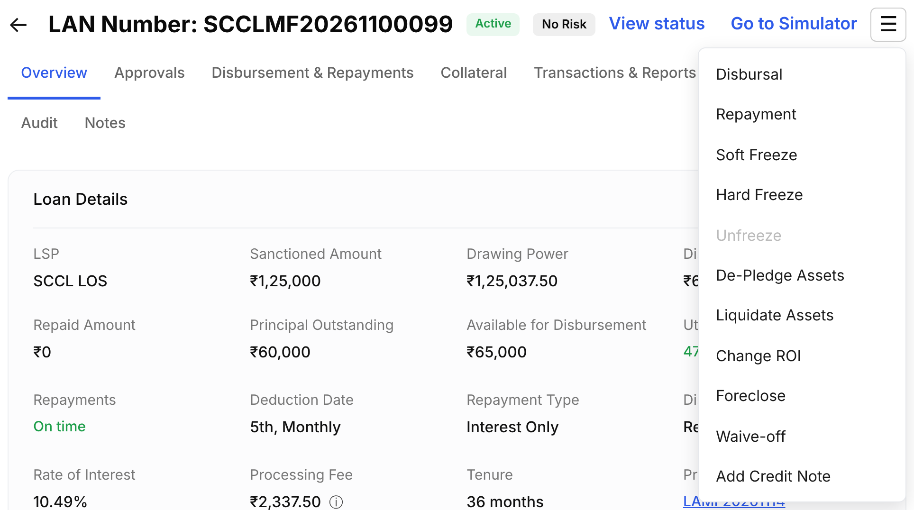

When a customer drops off after pledging the mutual fund units, some charges are already incurred. Today SCCL bears them. This BRD gives one common process to waive these charges fully, partially or not at all – for DRAFT, SUBMITTED and ACCOUNT OPENED loans in the Approvals tab and for ACTIVE loans from the ≡ menu – with an OPS maker, an OPS checker and the Treasury approval; to reject a pledged DRAFT loan; and to collect the balance from the customer (payment link, receipt, Treasury confirmation) before the units are de-pledged.
| S | LAN status | Customer dropped off | Charges applicable | Approvals / Waive-off | What OPS can do | |
|---|---|---|---|---|---|---|
| S 1 | DRAFT | Before pledging the mutual funds | None | Not applicable | No action needed. The loan moves to INACTIVE automatically after 30 days. | |
| S 2 | DRAFT | After pledging the mutual funds | Lien Marking Charge Lien Removal Charge | Reject | S 2.1 – Reject Without Waive-off | Reject the application with Full Waive-off, Partial Waive-off or Without waive-off – one request, maker → checker → Treasury approval. |
| S 2.2 – Reject With Full Waive-off | ||||||
| S 2.3 – Reject With Partial Waive-off | ||||||
| S 3 | DRAFT | After the Sanction Letter is generated (units pledged) | Processing Fee* Charge | Reject | S 3.1 – Reject Without Waive-off | Reject the application with Full Waive-off, Partial Waive-off or Without waive-off – one request, maker → checker → Treasury approval. |
| S 3.2 – Reject With Full Waive-off | ||||||
| S 3.3 – Reject With Partial Waive-off | ||||||
| S 4 | DRAFT | After the Loan Agreement e-Sign (units pledged, Sanction Letter generated and submitted) | Processing Fee* Charge | Reject | S 4.1 – Reject Without Waive-off | Reject the application with Full Waive-off, Partial Waive-off or Without waive-off – one request, maker → checker → Treasury approval. |
| S 4.2 – Reject With Full Waive-off | ||||||
| S 4.3 – Reject With Partial Waive-off | ||||||
| S 5 | SUBMITTED | After the E-Mandate (units pledged, Sanction Letter submitted, Loan Agreement e-Signed) | Processing Fee* Charge | S 5.1 – Approve | Approve the Loan Account Opening (the loan continues), or reject the application with Full Waive-off, Partial Waive-off or Without waive-off (maker → checker → Treasury approval). | |
| Reject | S 5.2 – Reject Without Waive-off | |||||
| S 5.3 – Reject With Full Waive-off | ||||||
| S 5.4 – Reject With Partial Waive-off | ||||||
| S 6 | ACCOUNT OPENED | After the Loan Account Opening | Processing Fee* Charge | Approve | S 6.1 – Approve Without Waive-off | Approve the Loan Lodgement (the loan continues) or reject the application – each with Full Waive-off, Partial Waive-off or Without waive-off (maker → checker → Treasury approval). |
| S 6.2 – Approve With Full Waive-off | ||||||
| S 6.3 – Approve With Partial Waive-off | ||||||
| Reject | S 6.4 – Reject Without Waive-off | |||||
| S 6.5 – Reject With Full Waive-off | ||||||
| S 6.6 – Reject With Partial Waive-off | ||||||
| S 7 | ACTIVE | After the Loan Lodgement (loan account active) | Processing Fee* Charge Bounce Charge Penal Charge Loan Renewal Charge Annual Maintenance Charge (AMC) Bank Swap Charge | S 7.1 – Without Waive-off | Waive the charges on the active loan (≡ menu → Waive-off page): Full Waive-off, Partial Waive-off or Without waive-off, with the maker → checker → Treasury approval. The loan cannot be rejected at this stage. | |
| S 7.2 – With Full Waive-off | ||||||
| S 7.3 – With Partial Waive-off | ||||||
*Inclusive of Lien Marking, Lien Removal and Stamp Duty
| From | Can change to | When |
|---|---|---|
| DRAFT | REJECTED | Only when the units are pledged – OPS rejects the application (with or without a waive-off, after the maker → checker → Treasury approval). |
| INACTIVE | Only when the units are not pledged – moves to INACTIVE after 30 days from the LAN generated date. A pledged DRAFT loan never moves to INACTIVE. | |
| SUBMITTED | The customer completes the journey and submits the application. | |
| SUBMITTED | ACCOUNT OPENED | OPS approves the Loan Account Opening. |
| REJECTED | OPS rejects the Loan Account Opening. | |
| ACCOUNT OPENED | ACTIVE | OPS approves the Loan Lodgement. |
| REJECTED | OPS rejects the Loan Lodgement. | |
| ACTIVE | CLOSED | Foreclosure, tenure completion or invocation. |
| Sanction loan amount | Maker | Checker | Final approval |
|---|---|---|---|
| Below ₹5 lakh | OPS L1 | OPS L2 or OPS L3 | Treasury L1, L2 or L3 |
| ₹5 lakh and above | OPS L2 | OPS L3 | Treasury L2 or L3 (not Treasury L1) |
Open the LMS prototype (DRAFT LAN, Approvals tab).

Open the LMS prototype (DRAFT LAN, Approvals tab).
Charges and amounts
Processing Fee* structure (DISC-355) – exclusive of GST (18% GST is added):
| Sanctioned Amount | Processing Fee*, exclusive of GST | Example |
|---|---|---|
| Below ₹1,50,000 | ₹1,499 (flat) | ₹1,25,000 → ₹1,499 + GST = ₹1,768.82 |
| ₹1,50,000 to ₹10,00,000 | 1% of the sanctioned amount | ₹5,00,000 → ₹5,000 + GST = ₹5,900 |
| Above ₹10,00,000 to ₹50,00,000 | 0.8% of the sanctioned amount | ₹20,00,000 → ₹16,000 + GST = ₹18,880 |
| Above ₹50,00,000 | 0.5% of the sanctioned amount | ₹1,00,00,000 → ₹50,000 + GST = ₹59,000 |
*Inclusive of Lien Marking, Lien Removal and Stamp Duty
The prototype screens use a scenario 3 sample LAN (SCCLMF20261100073) with a sanctioned amount of ₹22,400: Processing Fee* ₹1,499 + GST = ₹1,768.82.
| Column | What it shows |
|---|---|
| Checkbox | Selects one charge. The checkbox in the header selects all the charges. |
| Charges Name | Scenario 2: Lien Marking Charges and Lien Removal Charges. Scenario 3 onwards: Processing Fee* (with the note “*Inclusive of Lien Marking, Lien Removal and Stamp Duty” below the table). |
| Amount of Charges | The charge including GST (for example, Processing Fee* ₹1,768.82). It does not change after a waive-off. |
| Waived off Charges | The amount waived off for that charge – ₹0 until Treasury approves the request; after the approval, the approved amount. |
| Amount to be waived off | 0 by default and not editable. OPS can enter the amount only after selecting the checkbox of that charge; it cannot be more than the Amount of Charges. Unselecting the checkbox sets it back to 0. |
| Payable Charges | Amount of Charges – Waived off Charges – Amount to be waived off |
| Total | Total of each column |
| Payable charges | Type of waive-off |
|---|---|
| Same as the original charges (nothing waived) | No waive-off |
| Less than the original charges, but not 0 | Partial waive-off |
| 0 (every charge waived in full) | Full waive-off |


Checker (OPS L2 or L3 below ₹5 lakh / OPS L3 at ₹5 lakh and above)

Treasury (Treasury L1, L2 or L3 below ₹5 lakh / Treasury L2 or L3 at ₹5 lakh and above)

Decline by the checker or Treasury – the request is cancelled: nothing is waived, the LAN stays in DRAFT, the table, notes and files are cleared, and the maker can submit a new request. Internal mail “Waive-off Request Declined” goes to the maker with the remark (alert 17). Every step (submit, checker approval or decline, Treasury approval or decline) is recorded in the Audit tab with Approved by / Initiated by and the note or remark.


Applies when the Payable Charges are not zero on rejection (partial waive-off or no waive-off). With a full waive-off nothing is payable and the units can be de-pledged right after the rejection. Open the LOS payment screens (prototype).


Open the LMS prototype (Active LAN → ≡ → Waive-off).



| Charge | Amount | When it is incurred |
|---|---|---|
| Lien Marking Charge | ₹450 + GST (₹531) | When the mutual fund units are pledged – charged on its own only in scenario 2 (before the Sanction Letter) |
| Lien Removal Charge | ₹100 + GST (₹118) | When the lien is removed – charged on its own only in scenario 2 (before the Sanction Letter) |
| Processing Fee* Charge | One-time fee as per the Processing Fee structure, + GST (sample ₹1,499 + GST = ₹1,768.82) *Inclusive of Lien Marking, Lien Removal and Stamp Duty | From the Sanction Letter generation |
| Bounce Charge | ₹100 + GST (₹118) per instance | Active loan, when an EMI bounces |
| Penal Charge | 36% a year on the unpaid interest / EMI | Active loan, on a delay or default |
| Loan Renewal Charge | ₹999 + GST (₹1,178.82) | Active loan, on renewal |
| Annual Maintenance Charge (AMC) | ₹999 + GST (₹1,178.82) | Active loan, every year |
| Bank Swap Charge | ₹250 + GST (₹295) | Active loan, when the repayment bank account is changed |
What OPS can do: Reject the application with Full Waive-off, Partial Waive-off or Without waive-off – one request, maker → checker → Treasury approval.
| Charges Name | Amount of Charges | Waived off Charges | Amount to be waived off | Payable Charges |
|---|---|---|---|---|
| Lien Marking Charge | ₹450 + GST (₹531) | Already waived off (0 at first) | Entered by OPS after selecting the checkbox (0 by default) | Amount of Charges – Waived off Charges – Amount to be waived off |
| Lien Removal Charge | ₹100 + GST (₹118) | Already waived off (0 at first) | Entered by OPS after selecting the checkbox (0 by default) | Amount of Charges – Waived off Charges – Amount to be waived off |
| Outcome | What happens | Customer communication | De-pledge | Accounting entry (UNO) |
|---|---|---|---|---|
| S 2.1 – Rejected – no waive-off | OPS submits the rejection without waiving any charge; the OPS checker and Treasury approve. LAN → REJECTED. | Rejection SMS and mail with the full charges and the payment link. | After the customer pays and Treasury confirms the payment in LMS | Entry for the charges paid, posted in UNO once SCCL receives the payment. |
| S 2.2 – Rejected – full waive-off | OPS submits the rejection with all the charges to waive off; the OPS checker and Treasury approve. LAN → REJECTED. | Rejection SMS and mail. No payment link. | Right after the rejection | No entry. The waived charges do not go into UNO. |
| S 2.3 – Rejected – partial waive-off | OPS submits the rejection with part of the charges to waive off; the OPS checker and Treasury approve. LAN → REJECTED. | Rejection SMS and mail with the payable (reduced) charges and the payment link. | After the customer pays and Treasury confirms the payment in LMS | Entry for the amount paid, posted in UNO once SCCL receives the payment. The waived part does not go into UNO. |
What OPS can do: Reject the application with Full Waive-off, Partial Waive-off or Without waive-off – one request, maker → checker → Treasury approval.
| Charges Name | Amount of Charges | Waived off Charges | Amount to be waived off | Payable Charges |
|---|---|---|---|---|
| Processing Fee* Charge | One-time fee as per the Processing Fee structure, + GST (sample ₹1,499 + GST = ₹1,768.82) *Inclusive of Lien Marking, Lien Removal and Stamp Duty | Already waived off (0 at first) | Entered by OPS after selecting the checkbox (0 by default) | Amount of Charges – Waived off Charges – Amount to be waived off |
| Outcome | What happens | Customer communication | De-pledge | Accounting entry (UNO) |
|---|---|---|---|---|
| S 3.1 – Rejected – no waive-off | OPS submits the rejection without waiving any charge; the OPS checker and Treasury approve. LAN → REJECTED. | Rejection SMS and mail with the full charges and the payment link. | After the customer pays and Treasury confirms the payment in LMS | Entry for the charges paid, posted in UNO once SCCL receives the payment. |
| S 3.2 – Rejected – full waive-off | OPS submits the rejection with all the charges to waive off; the OPS checker and Treasury approve. LAN → REJECTED. | Rejection SMS and mail. No payment link. | Right after the rejection | No entry. The waived charges do not go into UNO. |
| S 3.3 – Rejected – partial waive-off | OPS submits the rejection with part of the charges to waive off; the OPS checker and Treasury approve. LAN → REJECTED. | Rejection SMS and mail with the payable (reduced) charges and the payment link. | After the customer pays and Treasury confirms the payment in LMS | Entry for the amount paid, posted in UNO once SCCL receives the payment. The waived part does not go into UNO. |
What OPS can do: Reject the application with Full Waive-off, Partial Waive-off or Without waive-off – one request, maker → checker → Treasury approval.
| Charges Name | Amount of Charges | Waived off Charges | Amount to be waived off | Payable Charges |
|---|---|---|---|---|
| Processing Fee* Charge | One-time fee as per the Processing Fee structure, + GST (sample ₹1,499 + GST = ₹1,768.82) *Inclusive of Lien Marking, Lien Removal and Stamp Duty | Already waived off (0 at first) | Entered by OPS after selecting the checkbox (0 by default) | Amount of Charges – Waived off Charges – Amount to be waived off |
| Outcome | What happens | Customer communication | De-pledge | Accounting entry (UNO) |
|---|---|---|---|---|
| S 4.1 – Rejected – no waive-off | OPS submits the rejection without waiving any charge; the OPS checker and Treasury approve. LAN → REJECTED. | Rejection SMS and mail with the full charges and the payment link. | After the customer pays and Treasury confirms the payment in LMS | Entry for the charges paid, posted in UNO once SCCL receives the payment. |
| S 4.2 – Rejected – full waive-off | OPS submits the rejection with all the charges to waive off; the OPS checker and Treasury approve. LAN → REJECTED. | Rejection SMS and mail. No payment link. | Right after the rejection | No entry. The waived charges do not go into UNO. |
| S 4.3 – Rejected – partial waive-off | OPS submits the rejection with part of the charges to waive off; the OPS checker and Treasury approve. LAN → REJECTED. | Rejection SMS and mail with the payable (reduced) charges and the payment link. | After the customer pays and Treasury confirms the payment in LMS | Entry for the amount paid, posted in UNO once SCCL receives the payment. The waived part does not go into UNO. |
What OPS can do: Approve the Loan Account Opening (the loan continues), or reject the application with Full Waive-off, Partial Waive-off or Without waive-off (maker → checker → Treasury approval).
| Charges Name | Amount of Charges | Waived off Charges | Amount to be waived off | Payable Charges |
|---|---|---|---|---|
| Processing Fee* Charge | One-time fee as per the Processing Fee structure, + GST (sample ₹1,499 + GST = ₹1,768.82) *Inclusive of Lien Marking, Lien Removal and Stamp Duty | Already waived off (0 at first) | Entered by OPS after selecting the checkbox (0 by default) | Amount of Charges – Waived off Charges – Amount to be waived off |
| Outcome | What happens | Customer communication | De-pledge | Accounting entry (UNO) |
|---|---|---|---|---|
| S 5.1 – Approved | OPS approves the Loan Account Opening. LAN → ACCOUNT OPENED. No charges are collected at this stage. | Existing communication. | Not applicable – the loan continues. | No entry at this stage. |
| S 5.2 – Rejected – no waive-off | OPS submits the rejection without waiving any charge; the OPS checker and Treasury approve. LAN → REJECTED. | Rejection SMS and mail with the full charges and the payment link. | After the customer pays and Treasury confirms the payment in LMS | Entry for the charges paid, posted in UNO once SCCL receives the payment. |
| S 5.3 – Rejected – full waive-off | OPS submits the rejection with all the charges to waive off; the OPS checker and Treasury approve. LAN → REJECTED. | Rejection SMS and mail. No payment link. | Right after the rejection | No entry. The waived charges do not go into UNO. |
| S 5.4 – Rejected – partial waive-off | OPS submits the rejection with part of the charges to waive off; the OPS checker and Treasury approve. LAN → REJECTED. | Rejection SMS and mail with the payable (reduced) charges and the payment link. | After the customer pays and Treasury confirms the payment in LMS | Entry for the amount paid, posted in UNO once SCCL receives the payment. The waived part does not go into UNO. |
What OPS can do: Approve the Loan Lodgement (the loan continues) or reject the application – each with Full Waive-off, Partial Waive-off or Without waive-off (maker → checker → Treasury approval).
| Charges Name | Amount of Charges | Waived off Charges | Amount to be waived off | Payable Charges |
|---|---|---|---|---|
| Processing Fee* Charge | One-time fee as per the Processing Fee structure, + GST (sample ₹1,499 + GST = ₹1,768.82) *Inclusive of Lien Marking, Lien Removal and Stamp Duty | Already waived off (0 at first) | Entered by OPS after selecting the checkbox (0 by default) | Amount of Charges – Waived off Charges – Amount to be waived off |
| Outcome | What happens | Customer communication | De-pledge | Accounting entry (UNO) |
|---|---|---|---|---|
| S 6.1 – Approved – no waive-off | OPS approves the Loan Lodgement without waiving any charge. The loan goes to lodgement. No charges are collected at this stage. | Existing communication. | Not applicable – the loan continues. | No entry at this stage. |
| S 6.2 – Approved – full waive-off | OPS submits the waive-off of all the charges (maker → checker → Treasury approval), then approves the Loan Lodgement. The loan goes to lodgement. | Existing communication. | Not applicable – the loan continues. | The waived charges do not go into UNO. |
| S 6.3 – Approved – partial waive-off | OPS submits the waive-off of part of the charges (maker → checker → Treasury approval), then approves the Loan Lodgement. The loan goes to lodgement. | Existing communication. | Not applicable – the loan continues. | The waived part does not go into UNO. |
| S 6.4 – Rejected – no waive-off | OPS submits the rejection without waiving any charge; the OPS checker and Treasury approve. LAN → REJECTED. | Rejection SMS and mail with the full charges and the payment link. | After the customer pays and Treasury confirms the payment in LMS | Entry for the charges paid, posted in UNO once SCCL receives the payment. |
| S 6.5 – Rejected – full waive-off | OPS submits the rejection with all the charges to waive off; the OPS checker and Treasury approve. LAN → REJECTED. | Rejection SMS and mail. No payment link. | Right after the rejection | No entry. The waived charges do not go into UNO. |
| S 6.6 – Rejected – partial waive-off | OPS submits the rejection with part of the charges to waive off; the OPS checker and Treasury approve. LAN → REJECTED. | Rejection SMS and mail with the payable (reduced) charges and the payment link. | After the customer pays and Treasury confirms the payment in LMS | Entry for the amount paid, posted in UNO once SCCL receives the payment. The waived part does not go into UNO. |
What OPS can do: Waive the charges on the active loan (≡ menu → Waive-off page): Full Waive-off, Partial Waive-off or Without waive-off, with the maker → checker → Treasury approval. The loan cannot be rejected at this stage.
| Charges Name | Amount of Charges | Waived off Charges | Amount to be waived off | Payable Charges |
|---|---|---|---|---|
| Processing Fee* Charge | One-time fee as per the Processing Fee structure, + GST (sample ₹1,499 + GST = ₹1,768.82) *Inclusive of Lien Marking, Lien Removal and Stamp Duty | Already waived off (0 at first) | Entered by OPS after selecting the checkbox (0 by default) | Amount of Charges – Waived off Charges – Amount to be waived off |
| Bounce Charge | ₹100 + GST (₹118) per instance | Already waived off (0 at first) | Entered by OPS after selecting the checkbox (0 by default) | Amount of Charges – Waived off Charges – Amount to be waived off |
| Penal Charge | 36% a year on the unpaid interest / EMI | Already waived off (0 at first) | Entered by OPS after selecting the checkbox (0 by default) | Amount of Charges – Waived off Charges – Amount to be waived off |
| Loan Renewal Charge | ₹999 + GST (₹1,178.82) | Already waived off (0 at first) | Entered by OPS after selecting the checkbox (0 by default) | Amount of Charges – Waived off Charges – Amount to be waived off |
| Annual Maintenance Charge (AMC) | ₹999 + GST (₹1,178.82) | Already waived off (0 at first) | Entered by OPS after selecting the checkbox (0 by default) | Amount of Charges – Waived off Charges – Amount to be waived off |
| Bank Swap Charge | ₹250 + GST (₹295) | Already waived off (0 at first) | Entered by OPS after selecting the checkbox (0 by default) | Amount of Charges – Waived off Charges – Amount to be waived off |
| Outcome | What happens | Customer communication | De-pledge | Accounting entry (UNO) |
|---|---|---|---|---|
| S 7.1 – Without waive-off | The charges stay in the Statement of Account (SOA) and are collected before the loan account is closed. | Existing communication. | At loan closure (existing process). | Existing accounting process. |
| S 7.2 – With full waive-off | OPS submits the waive-off of the full charge (maker → checker → Treasury approval). As the charge is already posted in the SOA, the SOA is updated with a waiver narration. | Existing communication. | At loan closure (existing process). | The waived charges do not go into UNO. |
| S 7.3 – With partial waive-off | OPS submits the waive-off of part of a charge (maker → checker → Treasury approval); the balance is collected before the loan account is closed. The SOA is updated with a waiver narration. | Existing communication. | At loan closure (existing process). | The waived part does not go into UNO; the balance follows the existing accounting process. |
Created by Azhagarsamy Subburaj. For any observation or clarification, please reach out to azhagarsamy.s@shriramcredit.in